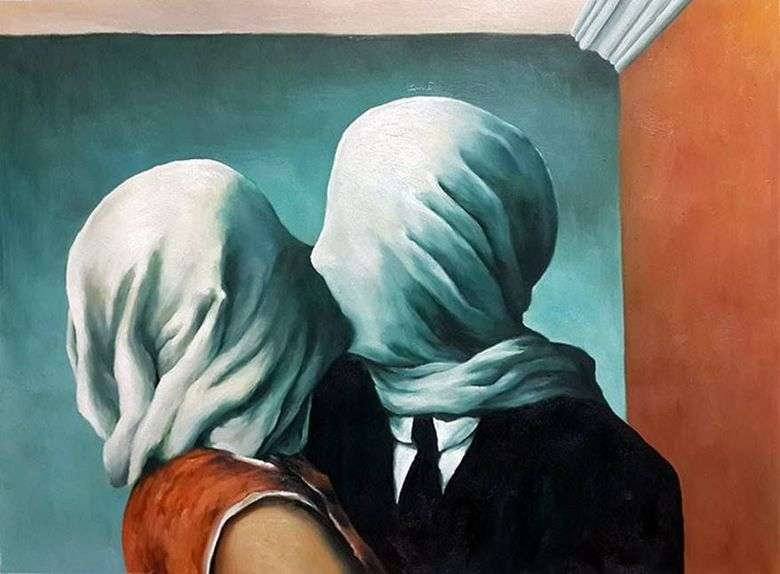
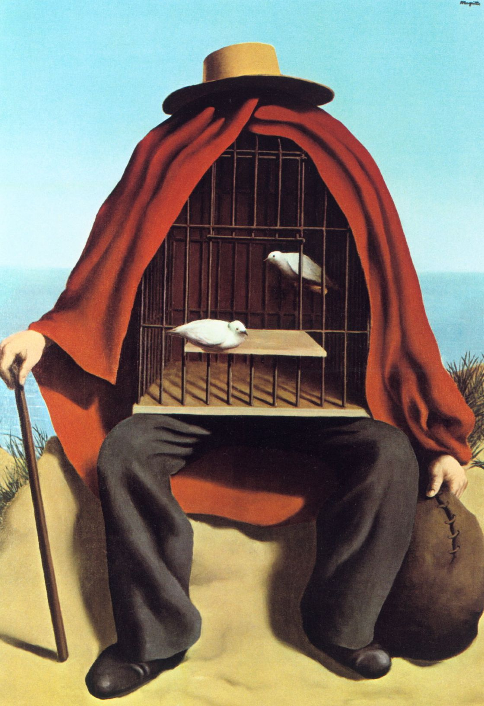

Obras Iconicas
▼
SALVADOR DALI
La persistencia de la memoria
Sueño causado por el vuelo de una abeja alrededor de una granada un segundo antes del despertar

El gran masturbador
Naturaleza muerta viviente
RENE MARGITTE

El hijo del hombre

Los amantes
El falso espejo

El terapeuta

El arte de vivir
JOHAN MIRO
La granja
Carnaval del arlequin

Azul II
Tierra labrada
MAX ERNST
Bosque gris

Gala Eluard
La virgen maria dandole azotes al niño jesus